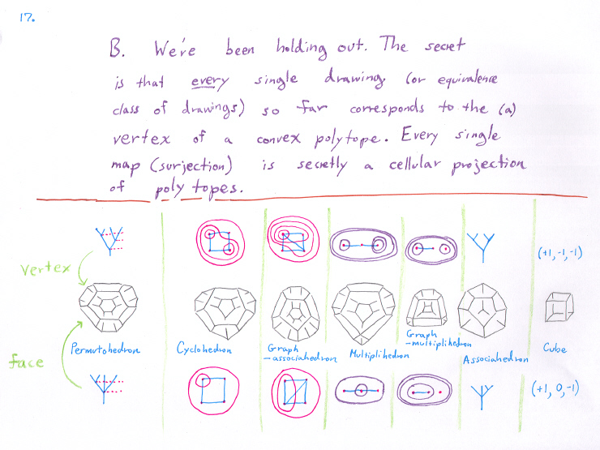

Part 2: Factoring and polytopes.
Polytopes.
Questions.
Back to Part 1b.
On to Part 3.
Back to research page.
The key sources include: S. Devadoss's papers on graph associahedra, and S.Forcey's paper on multiplihedra.

In the above, the maps on the left commute. On the right are some different projections for comparison. The new map S is the projection from the multiplihedra to the associahedra discovered by Stasheff, described by setting painted trees equivalent in such a way as to represent strict associativity in the range of the A_n map.
Back to Part 1b.
On to Part 3.
Back to research page.
Revision Date: